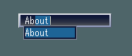
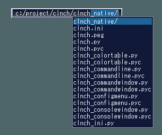
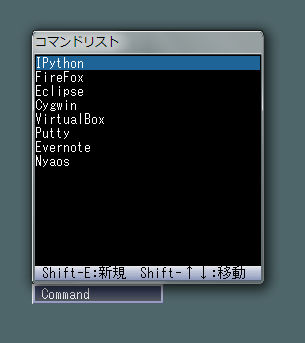
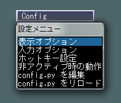
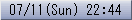
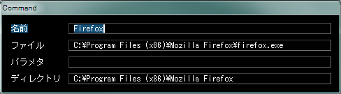

|
CraftLaunch
|


|
|
CraftLaunch
|
|
| 著作者: | craftware |
|---|---|
| 連絡先: | craftware@gmail.com |
| 開発環境: | Python + VisualC++2010 |
| 種別: | フリーウェア |
| 動作環境: | Windows XP/Vista/7/8 |
| Webサイト: | http://sites.google.com/site/craftware/ |
Contents
このソフトウェアは、キーボードだけでアプリケーションを立ちあげること が出来る、キーボードランチャです。
Windowsをキーボード中心で操作している人にとって便利なソフトです。
特徴
- キーボードでコマンドを打ち込むことで、アプリを実行
- コマンドを途中まで入力すれば、残りが補完される
- ファイル名も補完される
- スクリプト言語 Python で自由度の高いカスタマイズが可能
- かなり自由にホットキーを設定できる（たとえばScrollLockだけでもOK）
- ウインドウサイズが小さく、邪魔にならない
- 自由にキーアサインが可能
- ミュージックプレイヤを内蔵
- ソースコードを公開
CraftLaunch を起動すると、テキスト入力エリアを備えた、小さなウィンドウが 表示されます。
コマンド補完機能が搭載されていますので、途中まで入力すれば、残りの部分が 自動的に補完されます。 Return キーを押すと、入力したコマンドが実行されます。
ファイル名の補完機能もあります。
セミコロン( ; )で区切って入力することで、コマンドに引数を渡すことが出来ます。
数式を入力すると、計算することが出来ます。
[Command] というコマンドを実行すると、コマンドリストが表示されます。
[Config] というコマンドを実行すると、設定メニューが表示されます。
非アクティブ時に時計を表示したり、非表示にすることが出来ます。
config.py という名前の Python スクリプトの形式で記述された設定ファイルを編集 することで、キーバインドの変更や、特殊なコマンドの追加が出来ます。
配布されたファイルを解凍すると以下のファイルとフォルダが作成されます。
名前 解説 clnch.exe プログラム本体 python35.dll Pythonランタイムライブラリ library.zip スクリプトが格納されているアーカイブ _config.py デフォルト設定ファイル readme.txt 最初に読む文書 src.zip ソースコード lib/ DLLが格納されているディレクトリ extension/ ユーザサイドのスクリプトを入れるディレクトリ theme/ テーマのデータが格納されているディレクトリ doc/ ドキュメントが格納されているディレクトリ license/ コピーライト情報が格納されているディレクトリ また、最初の起動で、アプリケーションデータディレクトリに自動的に以下のファイルが作られます。 ( XP では c:/Documents and Settings/Application Data/CraftLaunch、Vista/7 では c:/Users/tom/AppData/Roaming/CraftLaunch)
名前 解説 config.py 設定ファイル clnch.ini 状態保存ファイル config.py と clnch.ini は、clnch.exe と同じディレクトリにおいておけば、 そちらが優先的に使われます。USBメモリなどで持ち歩く際に便利な方法です。
インストールしたフォルダごと消してください。
また、アプリケーションデータディレクトリを削除してください。 ( XP では c:/Documents and Settings/Application Data/CraftLaunch、Vista/7 では c:/Users/tom/AppData/Roaming/CraftLaunch)
このソフトウェアはレジストリを使用しません。
このソフトウェアでは、以下のライブラリを使用しています。
- Python Programming Language
- http://www.python.org/
- Pillow
- https://github.com/python-imaging/Pillow
- C/Migemo
- http://www.kaoriya.net/
CraftLaunch は、キーボードで操作するアプリケーションです。 標準で、以下のキーが割り当てられています。
キー 機能 Space 次の補完候補を選択する Shift-Space 前の補完候補を選択する TAB 補完候補の先頭部分の共通部分まで確定する Return コマンドを実行する Escape 入力中の文字列をクリアする／非アクティブ化する Ctrl-K 入力中の文字列を履歴リストから削除する (106キー)Ctrl-￥ (101キー)Ctrl-/ 入力中のファイルパスに関してのコンテキストメニューを出す Ctrl-ピリオド ミュージックプレイヤのプレイリストを開く Ctrl-Shift-ピリオド ミュージックプレイヤを停止する また、デフォルトの設定ファイルでは、以下のようにキーアサインされています。
キー 機能 F1 ドキュメントを開く Ctrl-E ファイルをテキストエディタで編集する キーアサインは、config.py の window.keymap または window.cmd_keymap を設定することで、変更することが出来ます。
window.keymap と window.cmd_keymap は似たような機能を持ちますが、window.cmd_keymap はコマンドの入力を終了させて、入力した文字列を履歴に追加します。window.keymap はコマンドの入力を終了しません。 window.keymap にはコマンドの編集のためのキーカスタマイズを設定し、window.cmd_keymap にはコマンドの実行のためのショートカットキーを設定するとよいでしょう。
コマンドリストウインドウでは、以下のようにキーアサインされています。
キー 機能 Return/E コマンドを編集する Shift-E コマンドを新規作成する Delete コマンドを削除する Shift-↑↓ コマンドの並び替え F インクリメンタルサーチを開始する
ミュージックプレイヤのプレイリストウインドウでは、以下のようにキーアサインされています。
キー 機能 Ctrl-ピリオド ミュージックを一時停止する Ctrl-Shift-ピリオド ミュージックを停止する Ctrl-←→ ミュージックの早送りと巻き戻し
標準では、以下のコマンドが登録されています。
コマンドの名前 機能 About アウトプットウインドウにバージョン情報を出力する。 Edit 引数に渡されたファイルを、テキストエディタで編集する。 History 履歴リストを表示する。 Config 設定メニューを表示する。 Reload 設定スクリプトを再読み込みする。 Quit CraftLaunchを終了する。 また、デフォルトの設定ファイルでは、以下のコマンドが登録されています。
コマンドの名前 機能 引数で渡されたキーワードをGoogleで検索する。 Eijiro 引数で渡された単語を英辞郎で翻訳する。 コマンドは、ファイルを Drag & Drop することで追加できるほか、 config.py の window.launcher.command_list を編集することで、追加や削除が出来ます。
コマンドを追加する方法は、いくつかあります。
- ファイルやショートカットを CraftLaunch のメインウインドウに Drag & Drop
- コマンドリストウインドウで Shift-E を押す
- config.py の window.launcher.command_list を編集する。
config.py を編集する方法では、Python言語の理解が必要となり、若干面倒ですが、 コマンドの動作を Python で柔軟に定義することが出来ます。
[Command] というコマンドを実行すると、コマンドリストウインドウが表示され、削除や並べ替え を行うことが出来ます。
ただし、コマンドリストウインドウでは、config.py で Python スクリプトで定義したコマンドは 表示されません。Python で定義したコマンドは、config.py を編集することで管理する必要があります。
コマンドには、下記のような設定項目があります。
設定項目 説明 名前 コマンドの名前。 ファイル 実行するファイルのパスやURL。 パラメタ 実行ファイルに渡すパラメタ。 ディレクトリ プログラム実行時のワーキングディレクトリ。 [ファイル]、[パラメタ]、[ディレクトリ] には、%～% 形式の置換文字列を使って、手入力された 引数や、環境変数を渡すことが出来ます。
記述 説明 %param% 入力された引数。 %～% 任意の環境変数。 %% % 文字そのもの。
[Config] コマンドを実行すると、設定メニューが表示されます。設定メニュー では、簡単なカスタマイズが可能です。
設定メニューには、以下のような項目があります。
表示オプション
テーマ
CraftLaunch の表示色やスキンを選択します。 テーマは、theme ディレクトリに配置します。 ユーザがテーマを作成し追加することができます。フォント名
CraftLaunch の表示に使用するフォントの名前を選択します。フォントサイズ
CraftLaunch の表示に使用するフォントのサイズを選択します。最小の横幅
CraftLaunch のメインウインドウの、最小の横幅の設定です。 文字サイズ単位です。最大の横幅
CraftLaunch のメインウインドウの、最大の横幅の設定です。 文字サイズ単位です。表示位置の保存
CraftLaunch のメインウインドウの、表示位置を保存します。 起動直後や、Escキーを押したときに、この位置にリセットされます。最前面に表示
CraftLaunch のウインドウの表示を、[通常]、[最前面]、[最前面のなかの最前面]、 の３つのタイプのうちの１つに設定します。
[最前面のなかの最前面] に設定すると、タスクバーのような、ほかの最前面ウインドウ よりも手前に表示されるようになります。
ディレクトリ区切り文字
標準的に使用するディレクトリの区切り文字を、と / のどちらかに設定します。入力オプション
キー割り当て
使用しているキーボードのタイプにあわせて、[101キーボード] / [106キーボード] のどちらかに設定します。自動補完
文字の入力に伴って、自動的に残りの部分が補完されるかどうかを設定します。
[自動補完しない] に設定した場合、補完候補がリスト表示されますが、 Space キーや ↑/↓キーを押さない限り、テキスト入力エリアの文字列が 補完されません。自動的な補完がお節介と感じる場合に設定します。
ホットキー設定
ホットキー割り当て
CraftLaunchをアクティブ化するホットキーを設定します。
ホットキーに設定したいキーを押すと、ホットキー設定ウインドウの中央部分に ホットキーの設定が表示されます。
ReturnキーとEscキーは、それぞれ決定とキャンセルに割り当てられており、 ホットキーに設定することは出来ません。
ホットキー動作設定
ホットキーの振る舞いを設定します。
メニュー 説明 アクティブ化 ホットキーを押すとアクティブ化する。 トグル ホットキーを押すとアクティブ化または非アクティブ化する。 非アクティブ時の動作
非アクティブ時の動作を、[空欄] / [時計] / [非表示] のいずれかから選択します。
メニュー 説明 空欄 特に文字列を表示しない 時計 時計文字列を表示する 非表示 CraftLaunchのメインウインドウを非表示にする [時計]の表示形式は、config.py で window.clock_format を設定することで、 カスタマイズすることが出来ます。
config.py を編集
設定ファイル config.py を、テキストエディタで編集します。config.py をリロード
設定ファイル config.py を、再読み込みします。
CraftLaunch はスクリプト言語 Python を内蔵しており、コマンドの登録や キーアサインを、Python スクリプトで記述することが出来ます。
CraftLaunch を一度起動すると、アプリケーションのデータディレクトリ ( XP では c:/Documents and Settings/Application Data/CraftLaunch、 Vista/7 では c:/Users/tom/AppData/Roaming/CraftLaunch) に config.py という名前の設定スクリプトが作られます。 このファイルをテキストエディタで編集します。
config.py を編集するテキストエディタは何でもかまいませんが、Python のソース コードを色付で表示してくれるものを推奨します。
config.pyの全体の構造
config.py には、以下のように、configure() という名前の関数を定義します。 configure()の引数には、MainWindow オブジェクトが渡され、この MainWindow オブジェクト を操作することにより、コマンドの登録やキーのカスタマイズをすることが出来ます。
configure関数の定義:
def configure(window):コマンド実行用キーマップの定義
コマンド実行のショートカットキー割り当てを行うには、以下のように window.cmd_keymap を設定します。
キーの割り当て例:
window.cmd_keymap[ "F1" ] = command_Help window.cmd_keymap[ "C-E" ] = window.command_Editキーには、 コマンド型の呼び出し可能オブジェクト を割り当てることが出来ます。
キーは文字列で指定します。書式は後述します。
コマンド編集用キーマップの定義
コマンド編集のキー割り当てを行うには、以下のように window.keymap を設定します。
キーの割り当て例:
window.keymap[ "A-Space" ] = window.command_AutoCompleteToggleキーには、 コマンド型の呼び出し可能オブジェクト を割り当てることが出来ます。
キーは文字列で指定します。書式は後述します。
テキストエディタの設定
テキストエディタの設定例:
window.editor = u"notepad.exe"window.editor に、好きなテキストエディタのパスを設定します。
この設定は、Edit コマンドを使ってファイルを編集するときと、 設定メニューの [ config.py の編集 ] を選択したときに影響します。
ファイルタイプへの動作の関連付け
ファイル名を入力してEnterを押すと、通常は OS でファイルタイプに 関連付けられた動作を実行しますが、window.association_list を設定することで、 ファイル名のパターンごとに動作をカスタマイズすることが出来ます。
ファイルタイプへの動作の関連付け例:
window.association_list += [ ( "*.mpg *.mpeg *.avi *.wmv", window.command_ShellExecute( None, u"wmplayer.exe", "/prefetch:7 /Play %param%", u"" ) ), ]window.association_list は、ファイル名パターンと、 コマンド型の呼び出し可能オブジェクト のペアを 格納するリストです。
時計の表示形式の設定
時計の表示形式の設定例:
window.clock_format = u"%Y/%m/%d(%a) %H:%M:%S"window.clock_format に、時計の表示形式を設定します。
この設定は、設定メニューの [非アクティブ時の動作] で、[時計] を選択したときに 表示される、時計の表示に影響します。
コマンドの登録
コマンドの登録を行うには、以下のように window.launcher.command_list を設定します。
コマンドの登録例:
window.launcher.command_list += [( u"Cfiler", window.command_ShellExecute( None, u"C:/ols/cfiler/cfiler.exe", u"", u"" ) )]window.launcher.command_list は、コマンドの名前と、 コマンド型の呼び出し可能オブジェクト の ペアのリストです。
コマンド型の呼び出し可能オブジェクト
window.cmd_keymap や、window.association_list や window.launcher.command_list には、 コマンド型の呼び出し可能オブジェクトを設定することが出来ます。
コマンド型の呼び出し可能オブジェクトとは、以下のようなルールに従って定義された、 関数やメソッドなどのことです。
- 引数の数は、0個 ～ 2個
- 第一引数には、コマンドに渡されたパラメタのリストを受け取る
- 第二引数には、コマンドの実行時に押されていたモディファイアキーの組み合わせを受け取る
- 返値は特に利用されないが、値を返してもかまわない
また、厳密なルールではありませんが、コマンド型の関数などには、 先頭に command_ という接頭辞を付けます。
コマンドの解釈ルールのカスタマイズ
CraftLaunch に入力されたコマンドは、複数の条件でチェックされ、 最初にヒットした条件で実行されます。
たとえば、登録コマンドの実行、URLをブラウザでオープン、数式の計算、といった 複数の条件をつかって、条件に合う方法で入力されたテキストを解釈/実行することができます。
window.commandline_list は、このようなコマンドの解釈/実行の機能を持ったオブジェクト のリストです。window.commandline_list に 自分で定義したオブジェクトを追加することで、 独自のコマンドの入力ルールを追加することができます。
commandline のオブジェクトは、以下のように onCandidate() onEnter() の 2つのメソッドを備えるオブジェクトである必要があります。
コマンドの解釈ルールのカスタマイズ例:
# 固定のコマンドを3つ追加するテスト class commandline_Test: def __init__(self): self.items = [ "Xxxx", "Yyyy", "Zzzz" ] # 入力される内容から補完候補を列挙する def onCandidate( self, update_info ): left = update_info.text[ : update_info.selectionLeft() ] left_lower = left.lower() cand_list = [] for item in self.items: if item[ : len(left_lower) ].lower() != left_lower: continue cand_list.append(item) return cand_list # 決定されたコマンドを解釈し可能なら実行する def onEnter( self, commandline, text, mod ): text_lower = text.lower() for item in self.items: if item.lower() != text_lower: continue print "Execute:", item commandline.appendHistory( text ) commandline.quit() return True return False # commandline_listの先頭に登録する window.commandline_list.insert( 0, commandline_Test() );
window.keymap や window.cmd_keymap を使って、キーの割り当てを行う際は、 文字列でキー入力条件を定義します。
キーの文字列表記
キー入力条件の文字列は、
C-S-Returnや
Ctrl-Shift-Returnのように、ハイフンで区切って、モディファイアとメインのキーを組み合わせて 表現します。
使用可能なモディファイアの記述方法は以下のとおりです。
モディファイア 記述方法 Alt Alt-, A- Control Ctrl-, C- Shift Shift-, S- Windows Win-, W- メインのキーの記述方法は以下のとおりです。
記述方法 補足説明 A ～ Z 0 ～ 9 Minus Plus Comma Period Semicolon Colon Slash BackQuote Tilde OpenBracket BackSlash Yen CloseBracket Quote DoubleQuote Underscore Asterisk Atmark Caret NumLock Divide Multiply Subtract Add Decimal Num0 ～ Num9 F1 ～ F12 Left, Right, Up, Down Space Tab Back バックスペース Enter/Return Escape/Esc CapsLock/Caps/Capital Apps アプリケーションキー Insert Delete Home End PageUp PageDown Alt LAlt RAlt Ctrl LCtrl RCtrl Shift LShift RShift LWin RWin PrintScreen ScrollLock Pause 仮想キーコード指定 Colon や Semicolon など、一部の記号キーは、キーボードタイプによって位置が異なります。 たとえば、日本語キーボードでは、BackQuote は Atmark と 同じ意味になります。 英語キーボードでは、BackQuote は Tilde と同じ意味になります。
CraftLaunch が提供しているのクラスや関数の詳細については、 APIリファレンス を参照してください。
CraftLaunch が内蔵している pyauto モジュールの詳細については、 pyautoドキュメント を参照してください。
clnch.exe をパラメタを渡しながら起動することで、 起動済みの CraftLaunch を制御することが出来ます。 ファイラと CraftLaunch を連携させるための機能です。
--execute
CraftLaunchのコマンドを実行します。 複数実行することが出来ます。
executeの使用例:
clnch.exe --execute="Google;keyhac" clnch.exe --execute="Google;keyhac" --execute="Firefox"--text
CraftLaunchのコマンド入力欄にテキストを設定します。
textの使用例:
clnch.exe --text="1+2+3"--selection
CraftLaunchのコマンド入力欄のテキストの選択範囲を設定します。
0 - 先頭 1 - コマンド本体選択 2 - コマンドの後ろ 3 - 引数の先頭 4 - 引数を選択 5 - 引数の後ろ A - 全体を選択selectionの使用例:
clnch.exe --text="Google;keyhac" --selection=5--position
CraftLaunchのウインドウの位置を一時的に変更します。 直前にアクティブだったウインドウの矩形の中での割合(0-100)で指定します。
positionの使用例:
clnch.exe --position="(20,40)"